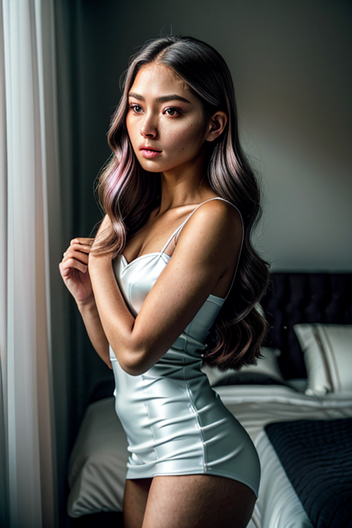
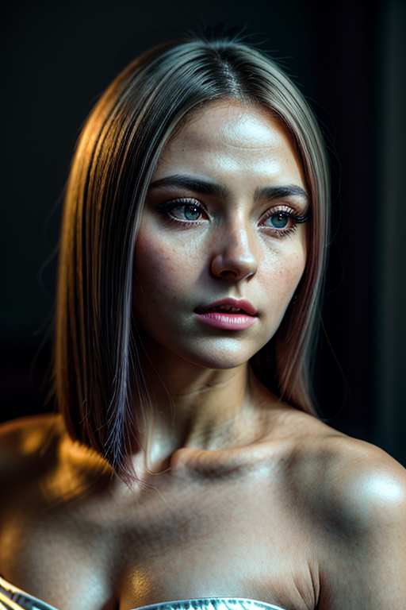
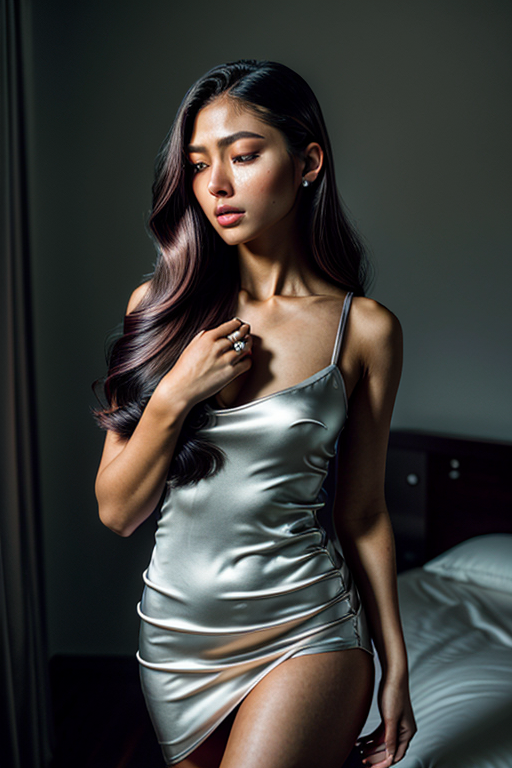
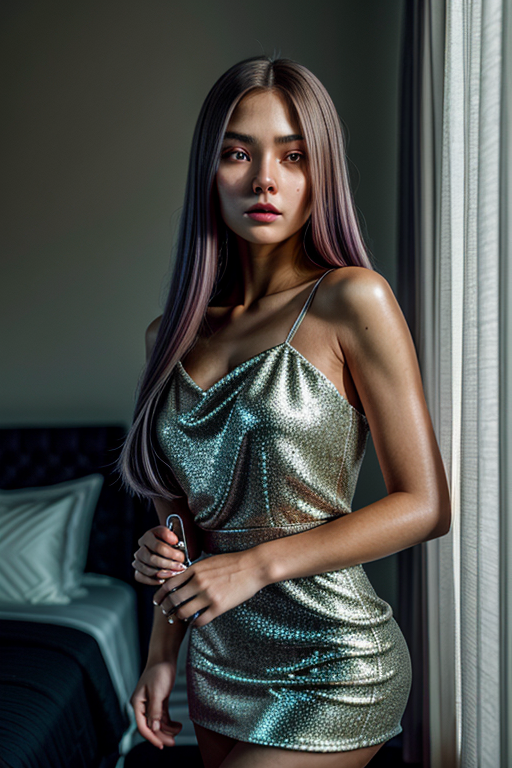
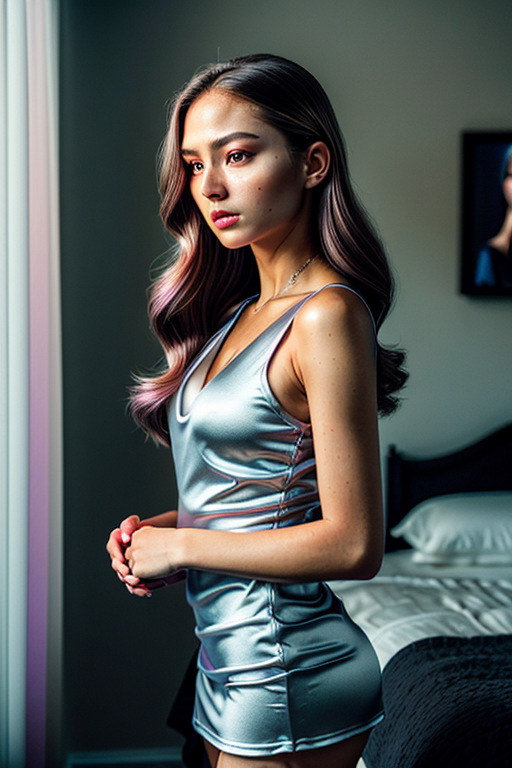
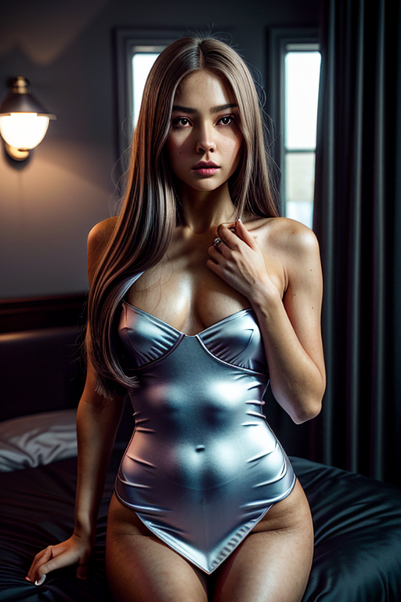
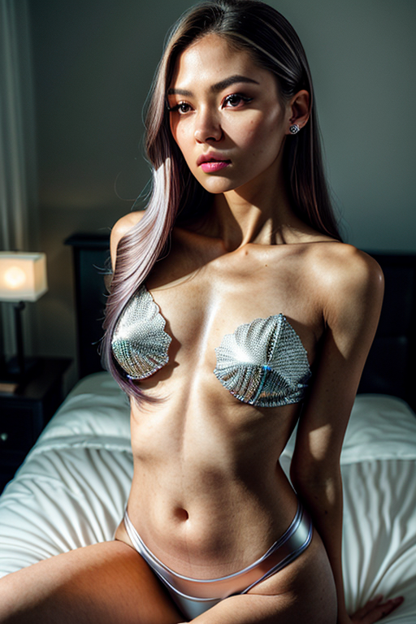
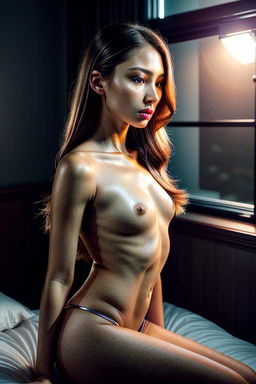

This set explores bedroom girl photoshoot through vintage aesthetics and moody tone under window light. Compositions use wide shot with bedroom scene, keeping focus clear and tidy. Details like retro styling and balanced colors make browsing easy.
Browse bedroom images. Page 12 of curated bedroom-style portrait collection.
       
This page explores page12 with a practical focus on visual detail and browsing experience. The image aims to deliver a straightforward visual impression while keeping the file lightweight. A brief explanation clarifies the subject and lighting so visitors can quickly decide where to go next. If you are comparing alternatives, keep an eye on subtle differences in framing, contrast, and color balance. The image aims to deliver a straightforward visual impression while keeping the file lightweight. A brief explanation clarifies the subject and lighting so visitors can quickly decide where to go next. For more context, browse related entries linked nearby; each page offers a slightly different angle to limit overlap. The image aims to deliver a straightforward visual impression while keeping the file lightweight. A brief explanation clarifies the subject and lighting so visitors can quickly decide where to go next. Alt text and headings are optimized to make the content accessible and to provide consistent cues across the site. Subtle differences in wording help avoid duplication across similar pages. For more context, browse related entries linked nearby; each page offers a slightly different angle to limit overlap.